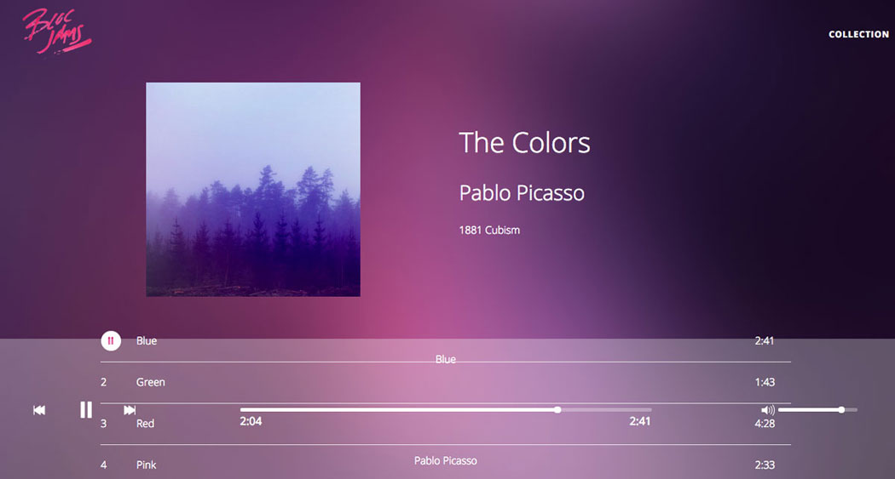
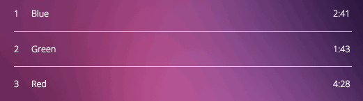
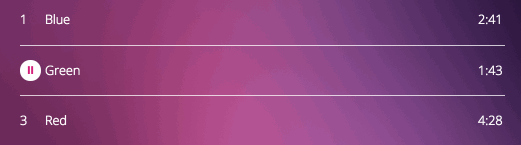
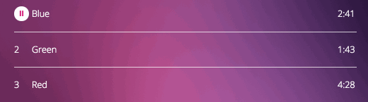
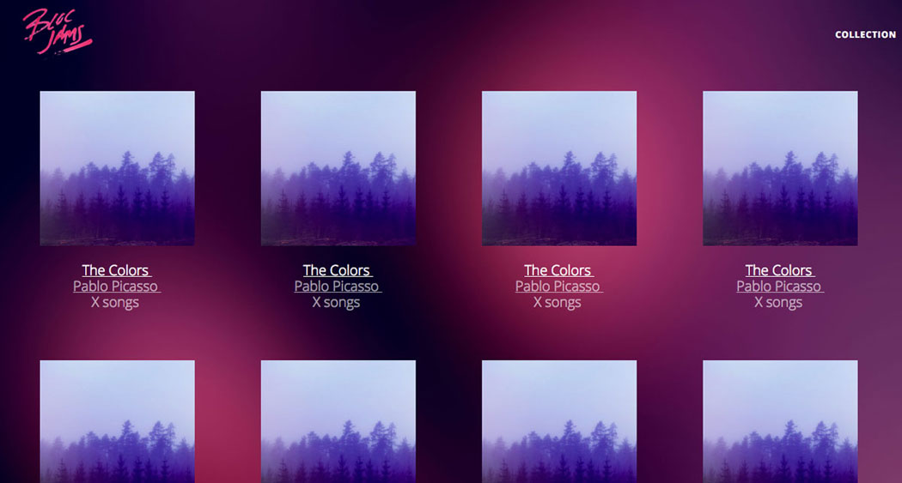

When I started my deep dive into coding earlier this year, I started with JavaScript. Day after day, I studied variables, loops, arrays, functions, objects, algorithms, all the good stuff that makes up the foundation of programming. After about a month of studying and putting together little programs and games, I was beyond anxious to build something bigger, something functional and potentially useful.
That's when I started Bloc Jams. Bloc Jams is the first project for Bloc's web development program, and it was a first for me in a lot of things — not only did I finally get to see how JavaScript works in the browser as opposed to the console, but I was connecting it with actual elements on my website, making things animate and transition, and I was using loops to replace long, redundant code. This was it! I was connecting the dots between my month of studying and the websites I interact with daily, and I was so excited, I could not stop talking about it, even to people who have no idea how websites work. (Oh, my poor husband, haha!)
I built the entire foundation of Bloc Jams using plain, vanilla JavaScript. Believe it or not, I actually enjoyed spending chunks of time thinking about the exact actions I wanted my site to take, then writing them out step by step in JavaScript. I was so proud of my code, my beautiful, beautiful code, that when Bloc told me to rip it apart and convert everything to jQuery, I was horrified. Happy to take on the challenge, sure, but damn it, this code was my baby! (Looking back now, I think it's actually kind of sweet how attached I was to that code. I was so new, I wanted to hold onto everything.)
Of course, the jQuery challenge turned out to be incredibly interesting and a great learning experience. I still held a lot of love for my vanilla JavaScript, but seeing jQuery in action made me realize the job could be done much faster and easier. It seemed like magic, but it wasn't all good things, either — more than anything, Bloc stressed that we really look at the pros and cons of jQuery and understand what it means to risk relying on an outside library for your website's functionality. In my research, I learned that there are lots of programmers who think jQuery is a language of its own, and there are even more people who don't know JavaScript well enough to use it without jQuery's assistance.
That's when the gravity of the exercise hit me — I'm going to be a programmer who knows what she's doing.
After building Bloc Jams once in vanilla JavaScript, then rebuilding it with jQuery, I understood all the ins and outs of what every line of code was doing. How exciting, right? That's when Bloc told me I'd be rebuilding Bloc Jams a third time — this time with Angular. I didn't feel the same drop in my stomach as the first time I was told I'd be ripping apart my code because I now understood the importance of reworking my code over and over and over to make it the very best it can be. Plus, I had heard about Angular before, so I was already interested in trying it out. And my mentor, Tessa, swore up and down that she knew I'd love Angular. Spoiler alert: She was right!
Bloc Jams Angular was my first time working with a framework, and it exceeded my expectations in every way. I learned about MVC architecture, and I got to see my models, views and controllers work together to create not just any old website, but a web app. If I'm being real here, it blew my mind. I was even dreaming about it at night! The whole idea of templates being displayed within templates opened up my world. Like, I had kind of seen it on the behind the scenes of my Wordpress websites when I'd go into the PHP files to edit templates, but I didn't fully understand it then. Now, MVC was my world.
Throughout all of Bloc Jams and Bloc Jams Angular, I was completely out of my comfort zone. But you know what? I loved every minute of it. This is how I knew I had made the right decision, and that a future career in coding would be just as amazing as I had imagined it to be.
I knew this especially when working with the code that handles playing the songs. As a user, it seems like such a simple concept — you push a button, the song starts. Not a big deal, except that it is totally a big deal. There is so much going on under the hood, it forced me to think long and hard about what the mouse is doing, where it's going, and what actions should result from all the of different combinations. Here's what I mean:
1. When a song is clicked to play it, the song number should change to a pause button:
2. When the mouse leaves the table row of the currently playing song, the pause button should remain:
3. When switching songs, the previously playing song's table cell should revert the content back to the song number:
4. When hovering over each of the songs that aren't playing, the play button should still appear; however, when hovering over the currently playing song, the play button should not appear:
All of those actions required their own code, some longer than others, and that's just one small part of the overall project. I could have made it simpler and not worried about anything other than click = play, but would that have been simpler for the user? Absolutely not! My biggest takeaway from this entire project is that, as a web developer, I am responsible for the beauty, functionality and simplicity that the user interacts with as well as the beauty, functionality and simplicity of the code that the user will never see. It's a big responsibility, especially in today's digital world, but it's a responsibility I take very seriously.
Bloc Jams Angular: GitHub / Live site
Date: February-April 2017
Project Checklist: JavaScript, jQuery, HTML5, CSS3, Bootstrap, AngularJS, BuzzJS
Built for Bloc.io